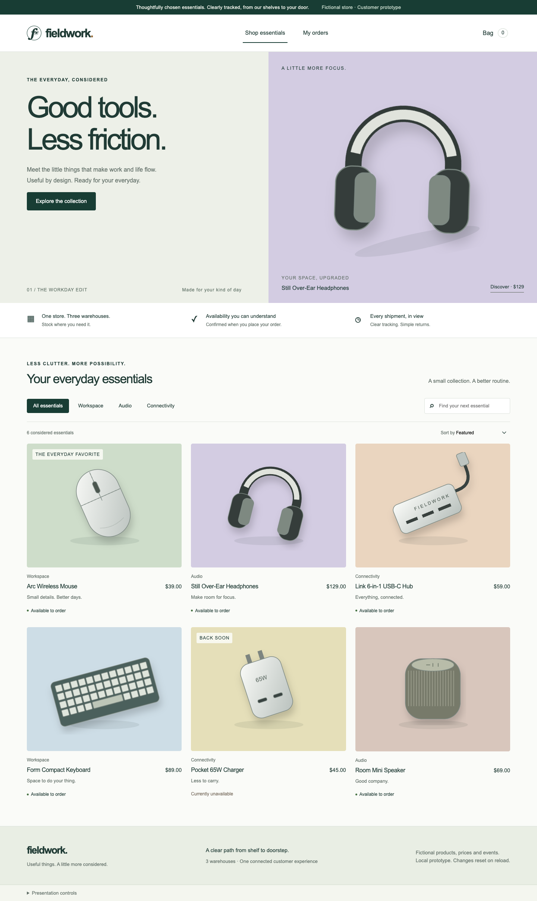
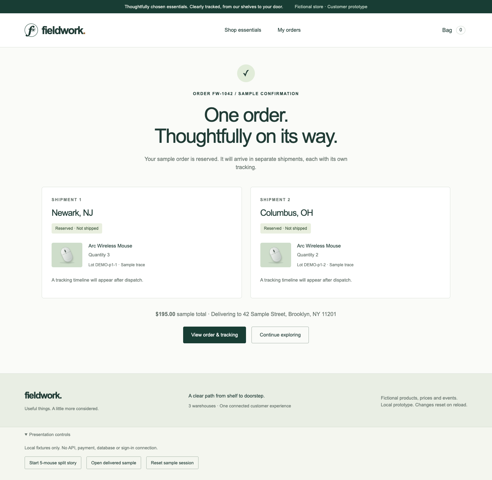
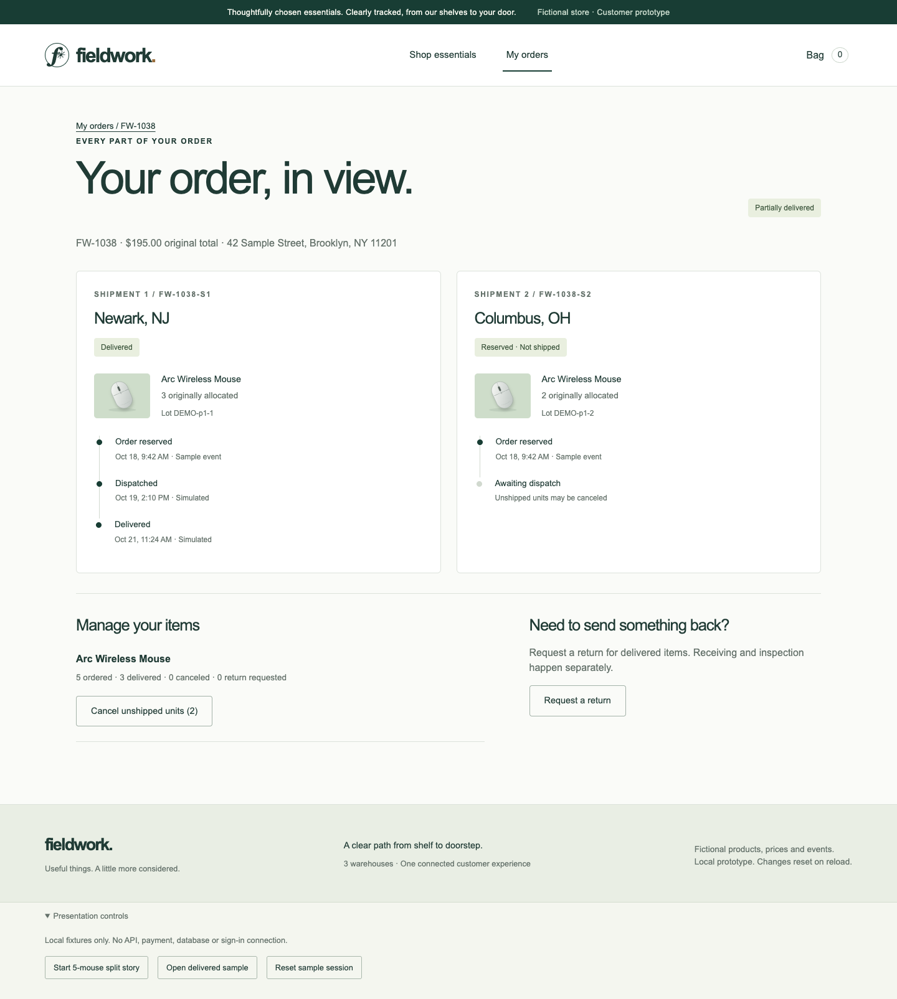

Browse useful essentials with clear availability across a three-warehouse network.

No single warehouse has five. The final backend must reserve both allocations atomically, or reject the whole order.

Historical fixture: three delivered units can be returned; two unshipped units can be canceled. Returns link to shipment items.
